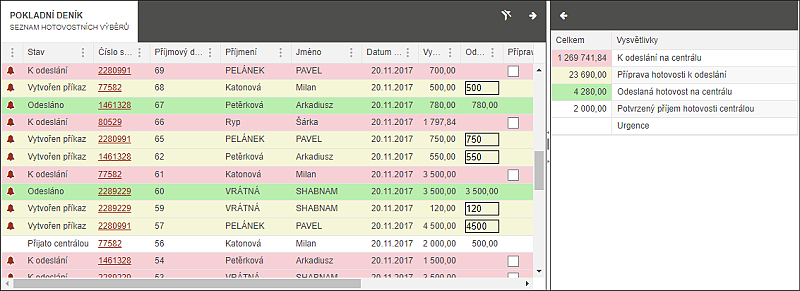
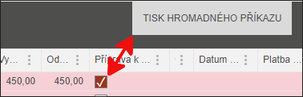

Pokladní deník
Pokladní deník je část, kde se sdružují všechny informace o hotovostních platbách přijatých inkasními pracovníky od dlužníků a zde si IP vytváří kontrolu o odeslání peněz na centrálu. Cílem je mít rychlý přehled o termínech převzetí a odeslání hotovostních finančních prostředků.

Jakmile uživatel vybere hotovost a tuto informaci vloží do systému pomocí procesu (Zápis OSN, Výběr hotovosti), pak systém eviduje kompletní postup. Barevné rozlišení řádků je popsáno níže a v kapitole Tabulka součtů.
Postupné kroky k odeslání hotovosti na centrálu a barevné označení záznamu: Barevné označení položek odpovídá barvám v řádku v pokladním deníku i v součtech v pravé části. IP hned vidí, ve kterých stavech má hotovost:
Informace, které jsou automaticky vypsány na základě procesu výběru hotovosti do přehledného seznamu:
Urgence - upozornění na nedořešený proces
Stav - Informace o stavu předání peněz
Číslo spisu - identifikace spisu, ke kterému je vybraná částka
Příjmový doklad - číslo příjmového dokladu
Příjmení - příjmení dlužníka
Jméno - jméno dlužníka
Datum - datum výběru
Vybraná částka - výše vybrané částky
Uživatel pomocí xboxu "Příprava k odeslání" vybere u příslušného řádku zařazení položky do hromadného příkazu. Ve chvíli výběru první položky se vpravo nahoře (viz obrázek) objeví tlačítko "Tisk hromadného příkazu".

Jakmile uživatel stiskne toto tlačítko, vygeneruje se Hromadný příkaz (všechny označené řádky jsou zahrnuty do přehledu). Položky seznamu pro převod peněz:
Odeslaná částka - částka, kterou by měl uživatel zařadit do hromadného příkazu. Zde může uživatel zadat jinou výši částky.
Příprava k odeslání - xbox, který je k zaškrtnutí v případě, že peníze ještě nejsou odeslané.
Odesláno na centrálu - xbox, který je k zaškrtnutí v případě, že je hotovost předána do banky.
Datum odeslání na centrálu - automaticky vygenerované datum při zaškrtnutí předchozího xboxu
Platba na centrále - informace o připsání hotovosti na centrálu - položka doplněna z KLCT.
Číslo příkazu - rozkliknutelný odkaz čísla hromadného příkazu
V případě, že je interval předání peněz porušen, je vygenerována Urgence na dodání peněz.